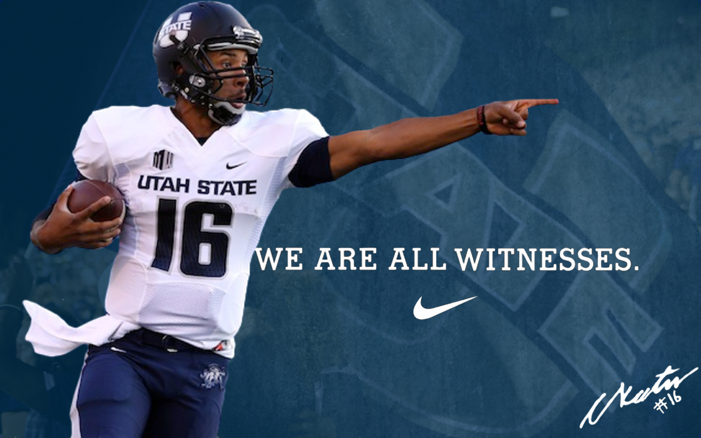
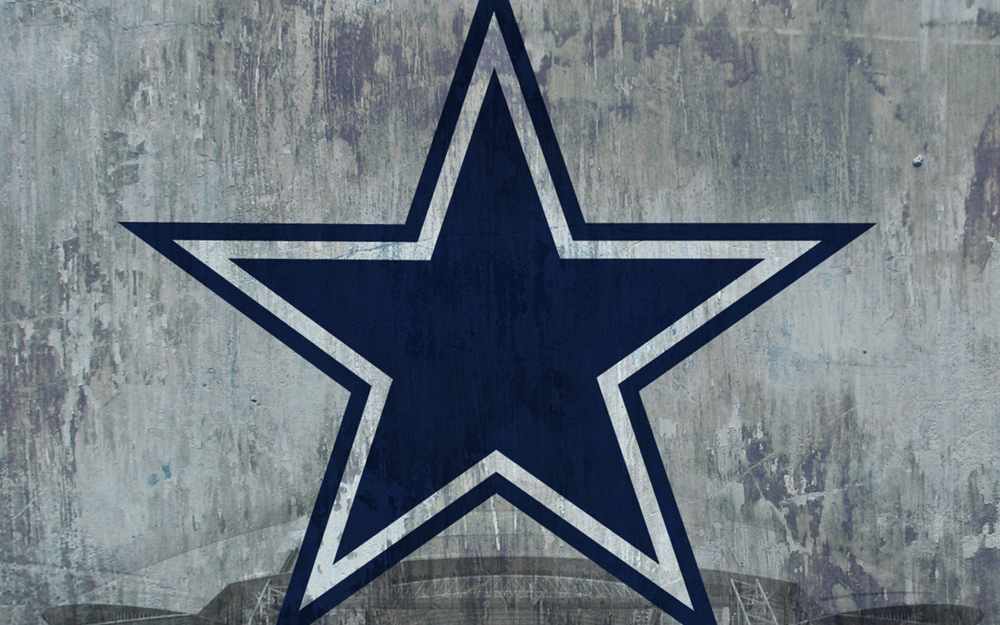
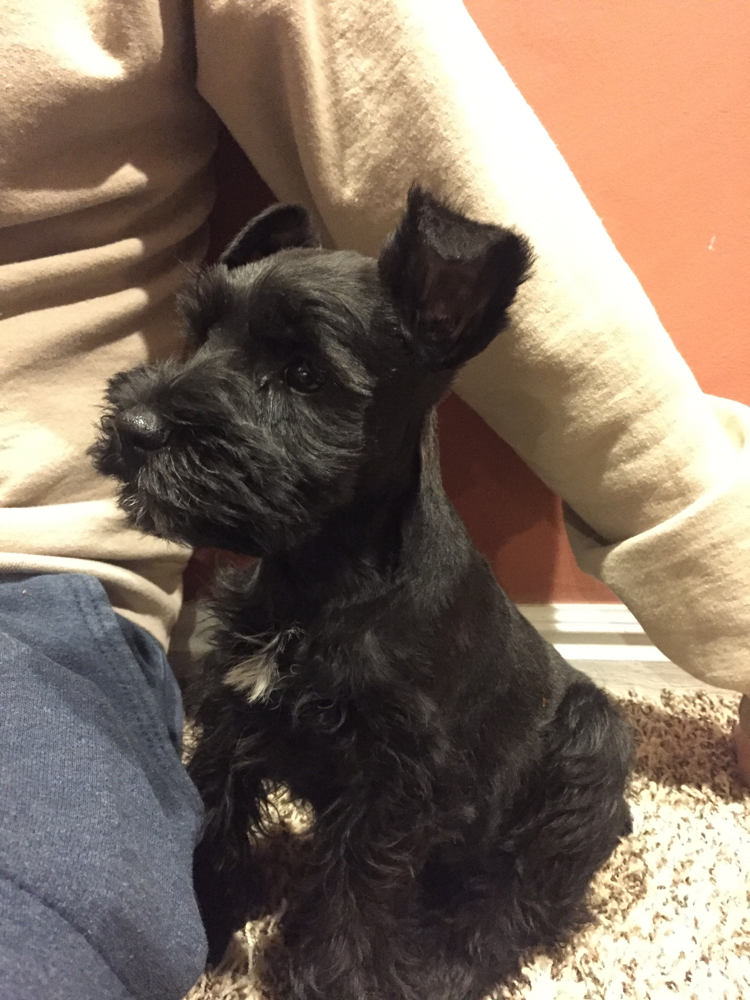

About Me
Well to get the basics out of the way, my name is Dakota Heninger. I am 24 years old and will be turning 25 on August 4th. Since class will be going I expect there will be some sort of celebration. That was a joke, but if it does happen I will not oppose it. I have been attending Utah State University for the last two years but decided I wanted to learn web development in a short period of time so I wouldn't be outdated by graduation. V School seemed like the perfect fit and I can't tell you how excited I am to begin. Thank you so much for the opportunity!
Interests
.JPG)
Hunting & Fishing
On a nice sunny day there's nowhere I would rather be than fishing, it's calm and quiet and there's no better place to just relax and collect your thoughts. Around fall we start getting ready for the hunt. Hunting has been a big tradition in my family since before I can remember and another activity I thoroughly enjoy doing.
Sports

I am a huge sports nut. I could watch, play, or talk about sports all day, everyday, and never get bored. I am an avid snowboarder and hit the slopes as much as possible. I love basketball and since birth have been a die hard Utah Jazz fan. However my favorite sport is footbal. Ever since I was old enough to walk it was made very clear that we ARE a Dallas Cowboys Family. I haven't missed a game since I was in diapers. Born and raised till death do us part. #WeDemBoyz 
Family

Family was always a huge part of my life. I was always taught that family comes first. I was lucky enough to meet my best friend and marry her on the 13th of August, 2015.  We have one child, in the form of a black miniature schnauzer named “ Zeke, ” and yes he is named after Ezekiel Elliot the running back for the Dallas Cowboys. That beautiful girl is the motivation behind everything I do.